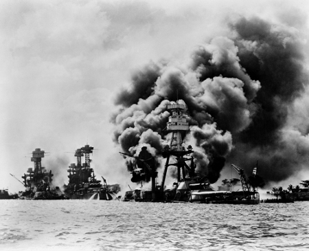

A Segunda Guerra Mundial (1939-1945) iniciou após Adolf Hitler, líder do nazismo alemão, ter decretado a invasão da Polônia pelas tropas alemãs em 1939. Os Estados Unidos da América até então não haviam entrado na guerra, porém no ano de 1941 o presidente norte-americano Franklin Roosevelt enviou tropas do exército estadunidense para a Europa. Mas, quais foram os motivos da entrada dos EUA na Segunda Guerra Mundial? Nosso principal objetivo será esclarecer essa questão
O Japão, pertencente ao bloco do Eixo, composto pela Alemanha e Itália, iniciou uma política de expansão territorial, suas pretensões voltaram-se para o sudeste asiático (onde se encontravam possessões coloniais europeias). Além da expansão territorial, os japoneses visavam dominar a exploração de recursos minerais e vegetais da região, ou seja, das matérias-primas, como o petróleo, o estanho, a borracha e o arroz.
Seguindo o plano de expansão territorial, os japoneses somente teriam que derrotar a marinha norte-americana no oceano Pacífico. Com esse intuito, em dezembro de 1941, a base de Pearl Harbor, no Havaí, pertencente aos EUA, foi atacada de surpresa pela Força Aérea do Japão, este fato ficou marcado na história como o ataque suicida dos kamikazes japoneses, um heterodoxo ataque, onde os pilotos japoneses jogaram seus aviões contra a base norte-americana. Ao final do ataque, o empreendimento realizado pela esquadra japonesa surtiu efeito, Pearl Harbor foi totalmente destruída e o Japão teve 29 aviões abatidos.
Ataques dos japoneses em Pearl Harbor
A partir de então, o presidente Roosevelt, dos EUA, enviou tropas norte-americanas para combater na Segunda Guerra Mundial, porém este fato não foi o único motivo da entrada dos EUA na guerra. Durante algum tempo, Roosevelt realizava acordos diplomáticos com o Primeiro-Ministro inglês Winston Churchill; juntos, assinaram o documento denominado Carta do Atlântico, cujo teor era contrário à ideologia e à política totalitária nazifascista.
A entrada dos EUA foi fator primordial para a vitória dos Aliados (Inglaterra, França, Rússia), os norte-americanos possuíam um forte e organizado exército e uma enorme capacidade bélica. A primeira vitória estadunidense durante a Segunda Guerra Mundial aconteceu na Batalha de Midway em 1942, derrotando a marinha japonesa.
No ano de 1943, Roosevelt enviou um grande contingente de soldados norte-americanos para a África, mas especificamente para o Egito, onde venceram as tropas alemãs na Batalha de El Alamein. Outra importante participação dos EUA na Segunda Guerra foi o desembarque na Normandia (França), juntamente com os aliados venceram o exército alemão e a cidade de Paris voltou para o controle da França, antes dominada pelos alemães.
Em 1945 as tropas norte-americanas finalizaram a guerra utilizando pela primeira vez na história uma arma nuclear, a bomba atômica. Os EUA bombardearam as cidades de Hiroxima e Nagasáqui, deixando uma vasta destruição humana e natural com a radioatividade nuclear, selando uma nova fase na história da humanidade.